One notebook-friendly story from raw faculty pages to a tool-using answer loop.
Fetch the faculty listing, keep the first five profiles as the stable working set, inspect one concrete example.
Run one multimodal call per poster slice so every note is readable, local, and easy to debug.
Merge page notes, recover any missing header fields, and produce one transient payload per professor.
Batch independent professor pipelines, generate graph JSON, and load the combined result into Neo4j.
Expose Neo4j tools through MCP, let the agent pick tools, run Cypher, and answer with a visible trace.
Lab 1 combines deterministic code with three LangChain interaction patterns.
LCEL keeps the transformation readable: prompt -> model -> parser.
Frames the input question or extraction request.
Runs the model call with one shared configuration.
Returns plain text that later steps can reuse or store.
Each OCR call sees one page slice plus the running profile context from earlier pages.
Extract the top identity block and initial profile facts.
Carry the accumulated context into the next OCR call.
Continue appending sections instead of restarting from zero.
Combine page notes and header recovery into one graph-ready preview.
Graph output turns poster text into relations that can be queried semantically.
who studies what
which institution the person belongs to
professional societies and academic groups
background facts that later support retrieval and filtering
Lab 1 finishes with a short payoff: the graph is already built, so the agent only needs to inspect and answer.
Every major stage leaves something concrete behind, which makes the lab easy to debug and teach.
Collect ordered detail URLs for the working set.
detail URL list
One note per image slice with preserved visible structure.
`page_notes.md` and `profile_so_far`
Merge pages into a transient graph-ready text preview.
graph input preview
Run one professor pipeline per entry with bounded concurrency.
`graph.json`, `graph.html`, Neo4j state
The lab is intentionally linear: each section narrows the teaching goal and hands off to the next.
Lab 1 is narrow on purpose. The durable lesson is how to structure an AI workflow so it stays inspectable and reusable.
Crawling and storage stay in plain Python; reasoning stays where models actually help.
Keep notes, markdown, graph JSON, and traces so failure points stay visible.
Students can understand the lab because each section has a narrow responsibility.
Notebook, CLI, and optional UI all depend on the same underlying agent module.
Lab 1 teaches the narrow path first; later labs add LangGraph and multi-agent patterns.